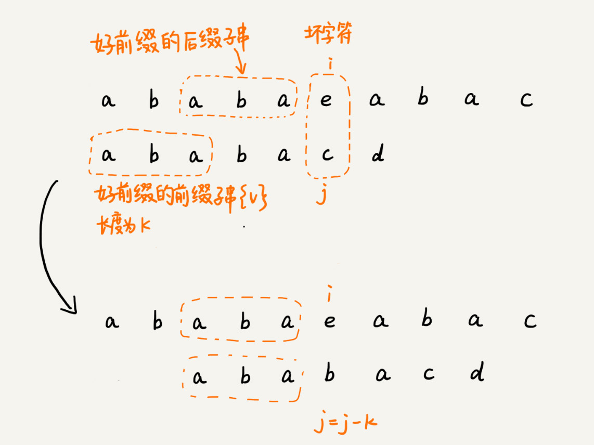
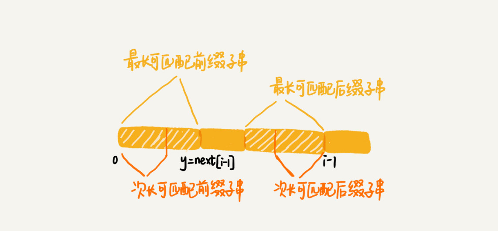

<!DOCTYPE HTML>
<html lang="" >
    <head>
        <meta charset="UTF-8">
        <meta content="text/html; charset=utf-8" http-equiv="Content-Type">
        <title>34 | 字符串匹配基础（下）：如何借助BM算法轻松理解KMP算法？ · GitBook</title>
        <meta http-equiv="X-UA-Compatible" content="IE=edge" />
        <meta name="description" content="">
        <meta name="generator" content="GitBook 3.2.3">
        
        
        
    
    <link rel="stylesheet" href="../gitbook/style.css">

    
            
                
                <link rel="stylesheet" href="../gitbook/gitbook-plugin-highlight/website.css">
                
            
                
                <link rel="stylesheet" href="../gitbook/gitbook-plugin-search/search.css">
                
            
                
                <link rel="stylesheet" href="../gitbook/gitbook-plugin-fontsettings/website.css">
                
            
        

    

    
        
    
        
    
        
    
        
    
        
    
        
    

        
    
    
    <meta name="HandheldFriendly" content="true"/>
    <meta name="viewport" content="width=device-width, initial-scale=1, user-scalable=no">
    <meta name="apple-mobile-web-app-capable" content="yes">
    <meta name="apple-mobile-web-app-status-bar-style" content="black">
    <link rel="apple-touch-icon-precomposed" sizes="152x152" href="../gitbook/images/apple-touch-icon-precomposed-152.png">
    <link rel="shortcut icon" href="../gitbook/images/favicon.ico" type="image/x-icon">

    
    <link rel="next" href="35.html" />
    
    
    <link rel="prev" href="33.html" />
    

    </head>
    <body>
        
<div class="book">
    <div class="book-summary">
        
            
<div id="book-search-input" role="search">
    <input type="text" placeholder="Type to search" />
</div>

            
                <nav role="navigation">
                


<ul class="summary">
    
    

    

    
        
        
    
        <li class="chapter " data-level="1.1" data-path="../">
            
                <a href="../">
            
                    
                    介绍
            
                </a>
            

            
            <ul class="articles">
                
    
        <li class="chapter " data-level="1.1.1" data-path="00.html">
            
                <a href="00.html">
            
                    
                    开篇词 | 从今天起，跨过“数据结构与算法”这道坎
            
                </a>
            

            
        </li>
    
        <li class="chapter " data-level="1.1.2" data-path="01.html">
            
                <a href="01.html">
            
                    
                    01 | 为什么要学习数据结构和算法？
            
                </a>
            

            
        </li>
    
        <li class="chapter " data-level="1.1.3" data-path="02.html">
            
                <a href="02.html">
            
                    
                    02 | 如何抓住重点，系统高效地学习数据结构与算法？
            
                </a>
            

            
        </li>
    
        <li class="chapter " data-level="1.1.4" data-path="03.html">
            
                <a href="03.html">
            
                    
                    03 | 复杂度分析（上）：如何分析、统计算法的执行效率和资源消耗？
            
                </a>
            

            
        </li>
    
        <li class="chapter " data-level="1.1.5" data-path="04.html">
            
                <a href="04.html">
            
                    
                    04 | 复杂度分析（下）：浅析最好、最坏、平均、均摊时间复杂度
            
                </a>
            

            
        </li>
    
        <li class="chapter " data-level="1.1.6" data-path="04-1.html">
            
                <a href="04-1.html">
            
                    
                    不定期福利第一期 | 数据结构与算法学习书单
            
                </a>
            

            
        </li>
    
        <li class="chapter " data-level="1.1.7" data-path="05.html">
            
                <a href="05.html">
            
                    
                    05 | 数组：为什么很多编程语言中数组都从0开始编号？
            
                </a>
            

            
        </li>
    
        <li class="chapter " data-level="1.1.8" data-path="06.html">
            
                <a href="06.html">
            
                    
                    06 | 链表（上）：如何实现LRU缓存淘汰算法?
            
                </a>
            

            
        </li>
    
        <li class="chapter " data-level="1.1.9" data-path="07.html">
            
                <a href="07.html">
            
                    
                    07 | 链表（下）：如何轻松写出正确的链表代码？
            
                </a>
            

            
        </li>
    
        <li class="chapter " data-level="1.1.10" data-path="08.html">
            
                <a href="08.html">
            
                    
                    08 | 栈：如何实现浏览器的前进和后退功能？
            
                </a>
            

            
        </li>
    
        <li class="chapter " data-level="1.1.11" data-path="09.html">
            
                <a href="09.html">
            
                    
                    09 | 队列：队列在线程池等有限资源池中的应用
            
                </a>
            

            
        </li>
    
        <li class="chapter " data-level="1.1.12" data-path="10.html">
            
                <a href="10.html">
            
                    
                    10 | 递归：如何用三行代码找到“最终推荐人”？
            
                </a>
            

            
        </li>
    
        <li class="chapter " data-level="1.1.13" data-path="11.html">
            
                <a href="11.html">
            
                    
                    11 | 排序（上）：为什么插入排序比冒泡排序更受欢迎？
            
                </a>
            

            
        </li>
    
        <li class="chapter " data-level="1.1.14" data-path="12.html">
            
                <a href="12.html">
            
                    
                    12 | 排序（下）：如何用快排思想在O(n)内查找第K大元素？
            
                </a>
            

            
        </li>
    
        <li class="chapter " data-level="1.1.15" data-path="13.html">
            
                <a href="13.html">
            
                    
                    13 | 线性排序：如何根据年龄给100万用户数据排序？
            
                </a>
            

            
        </li>
    
        <li class="chapter " data-level="1.1.16" data-path="14.html">
            
                <a href="14.html">
            
                    
                    14 | 排序优化：如何实现一个通用的、高性能的排序函数？
            
                </a>
            

            
        </li>
    
        <li class="chapter " data-level="1.1.17" data-path="15.html">
            
                <a href="15.html">
            
                    
                    15 | 二分查找（上）：如何用最省内存的方式实现快速查找功能？
            
                </a>
            

            
        </li>
    
        <li class="chapter " data-level="1.1.18" data-path="16.html">
            
                <a href="16.html">
            
                    
                    16 | 二分查找（下）：如何快速定位IP对应的省份地址？
            
                </a>
            

            
        </li>
    
        <li class="chapter " data-level="1.1.19" data-path="17.html">
            
                <a href="17.html">
            
                    
                    17 | 跳表：为什么Redis一定要用跳表来实现有序集合？
            
                </a>
            

            
        </li>
    
        <li class="chapter " data-level="1.1.20" data-path="18.html">
            
                <a href="18.html">
            
                    
                    18 | 散列表（上）：Word文档中的单词拼写检查功能是如何实现的？
            
                </a>
            

            
        </li>
    
        <li class="chapter " data-level="1.1.21" data-path="19.html">
            
                <a href="19.html">
            
                    
                    19 | 散列表（中）：如何打造一个工业级水平的散列表？
            
                </a>
            

            
        </li>
    
        <li class="chapter " data-level="1.1.22" data-path="20.html">
            
                <a href="20.html">
            
                    
                    20 | 散列表（下）：为什么散列表和链表经常会一起使用？
            
                </a>
            

            
        </li>
    
        <li class="chapter " data-level="1.1.23" data-path="21.html">
            
                <a href="21.html">
            
                    
                    21 | 哈希算法（上）：如何防止数据库中的用户信息被脱库？
            
                </a>
            

            
        </li>
    
        <li class="chapter " data-level="1.1.24" data-path="22.html">
            
                <a href="22.html">
            
                    
                    22 | 哈希算法（下）：哈希算法在分布式系统中有哪些应用？
            
                </a>
            

            
        </li>
    
        <li class="chapter " data-level="1.1.25" data-path="23.html">
            
                <a href="23.html">
            
                    
                    23 | 二叉树基础（上）：什么样的二叉树适合用数组来存储？
            
                </a>
            

            
        </li>
    
        <li class="chapter " data-level="1.1.26" data-path="24.html">
            
                <a href="24.html">
            
                    
                    24 | 二叉树基础（下）：有了如此高效的散列表，为什么还需要二叉树？
            
                </a>
            

            
        </li>
    
        <li class="chapter " data-level="1.1.27" data-path="25.html">
            
                <a href="25.html">
            
                    
                    25 | 红黑树（上）：为什么工程中都用红黑树这种二叉树？
            
                </a>
            

            
        </li>
    
        <li class="chapter " data-level="1.1.28" data-path="26.html">
            
                <a href="26.html">
            
                    
                    26 | 红黑树（下）：掌握这些技巧，你也可以实现一个红黑树
            
                </a>
            

            
        </li>
    
        <li class="chapter " data-level="1.1.29" data-path="27.html">
            
                <a href="27.html">
            
                    
                    27 | 递归树：如何借助树来求解递归算法的时间复杂度？
            
                </a>
            

            
        </li>
    
        <li class="chapter " data-level="1.1.30" data-path="27-1.html">
            
                <a href="27-1.html">
            
                    
                    不定期福利第二期 | 王争：羁绊前行的，不是肆虐的狂风，而是内心的迷茫
            
                </a>
            

            
        </li>
    
        <li class="chapter " data-level="1.1.31" data-path="28.html">
            
                <a href="28.html">
            
                    
                    28 | 堆和堆排序：为什么说堆排序没有快速排序快？
            
                </a>
            

            
        </li>
    
        <li class="chapter " data-level="1.1.32" data-path="29.html">
            
                <a href="29.html">
            
                    
                    29 | 堆的应用：如何快速获取到Top 10最热门的搜索关键词？
            
                </a>
            

            
        </li>
    
        <li class="chapter " data-level="1.1.33" data-path="30.html">
            
                <a href="30.html">
            
                    
                    30 | 图的表示：如何存储微博、微信等社交网络中的好友关系？
            
                </a>
            

            
        </li>
    
        <li class="chapter " data-level="1.1.34" data-path="31.html">
            
                <a href="31.html">
            
                    
                    31 | 深度和广度优先搜索：如何找出社交网络中的三度好友关系？
            
                </a>
            

            
        </li>
    
        <li class="chapter " data-level="1.1.35" data-path="32.html">
            
                <a href="32.html">
            
                    
                    32 | 字符串匹配基础（上）：如何借助哈希算法实现高效字符串匹配？
            
                </a>
            

            
        </li>
    
        <li class="chapter " data-level="1.1.36" data-path="33.html">
            
                <a href="33.html">
            
                    
                    33 | 字符串匹配基础（中）：如何实现文本编辑器中的查找功能？
            
                </a>
            

            
        </li>
    
        <li class="chapter active" data-level="1.1.37" data-path="34.html">
            
                <a href="34.html">
            
                    
                    34 | 字符串匹配基础（下）：如何借助BM算法轻松理解KMP算法？
            
                </a>
            

            
        </li>
    
        <li class="chapter " data-level="1.1.38" data-path="35.html">
            
                <a href="35.html">
            
                    
                    35 | Trie树：如何实现搜索引擎的搜索关键词提示功能？
            
                </a>
            

            
        </li>
    
        <li class="chapter " data-level="1.1.39" data-path="36.html">
            
                <a href="36.html">
            
                    
                    36 | AC自动机：如何用多模式串匹配实现敏感词过滤功能？
            
                </a>
            

            
        </li>
    
        <li class="chapter " data-level="1.1.40" data-path="37.html">
            
                <a href="37.html">
            
                    
                    37 | 贪心算法：如何用贪心算法实现Huffman压缩编码？
            
                </a>
            

            
        </li>
    
        <li class="chapter " data-level="1.1.41" data-path="38.html">
            
                <a href="38.html">
            
                    
                    38 | 分治算法：谈一谈大规模计算框架MapReduce中的分治思想
            
                </a>
            

            
        </li>
    
        <li class="chapter " data-level="1.1.42" data-path="38-1.html">
            
                <a href="38-1.html">
            
                    
                    不定期福利第三期 | 测一测你的算法阶段学习成果
            
                </a>
            

            
        </li>
    
        <li class="chapter " data-level="1.1.43" data-path="39.html">
            
                <a href="39.html">
            
                    
                    39 | 回溯算法：从电影《蝴蝶效应》中学习回溯算法的核心思想
            
                </a>
            

            
        </li>
    
        <li class="chapter " data-level="1.1.44" data-path="40.html">
            
                <a href="40.html">
            
                    
                    40 | 初识动态规划：如何巧妙解决“双十一”购物时的凑单问题？
            
                </a>
            

            
        </li>
    
        <li class="chapter " data-level="1.1.45" data-path="40-1.html">
            
                <a href="40-1.html">
            
                    
                    不定期福利第四期 | 刘超：我是怎么学习《数据结构与算法之美》的？
            
                </a>
            

            
        </li>
    
        <li class="chapter " data-level="1.1.46" data-path="41.html">
            
                <a href="41.html">
            
                    
                    41 | 动态规划理论：一篇文章带你彻底搞懂最优子结构、无后效性和重复子问题
            
                </a>
            

            
        </li>
    
        <li class="chapter " data-level="1.1.47" data-path="42.html">
            
                <a href="42.html">
            
                    
                    42 | 动态规划实战：如何实现搜索引擎中的拼写纠错功能？
            
                </a>
            

            
        </li>
    
        <li class="chapter " data-level="1.1.48" data-path="43.html">
            
                <a href="43.html">
            
                    
                    43 | 拓扑排序：如何确定代码源文件的编译依赖关系？
            
                </a>
            

            
        </li>
    
        <li class="chapter " data-level="1.1.49" data-path="44.html">
            
                <a href="44.html">
            
                    
                    44 | 最短路径：地图软件是如何计算出最优出行路径的？
            
                </a>
            

            
        </li>
    
        <li class="chapter " data-level="1.1.50" data-path="45.html">
            
                <a href="45.html">
            
                    
                    45 | 位图：如何实现网页爬虫中的URL去重功能？
            
                </a>
            

            
        </li>
    
        <li class="chapter " data-level="1.1.51" data-path="46.html">
            
                <a href="46.html">
            
                    
                    46 | 概率统计：如何利用朴素贝叶斯算法过滤垃圾短信？
            
                </a>
            

            
        </li>
    
        <li class="chapter " data-level="1.1.52" data-path="47.html">
            
                <a href="47.html">
            
                    
                    47 | 向量空间：如何实现一个简单的音乐推荐系统？
            
                </a>
            

            
        </li>
    
        <li class="chapter " data-level="1.1.53" data-path="48.html">
            
                <a href="48.html">
            
                    
                    48 | B+树：MySQL数据库索引是如何实现的？
            
                </a>
            

            
        </li>
    
        <li class="chapter " data-level="1.1.54" data-path="49.html">
            
                <a href="49.html">
            
                    
                    49 | 搜索：如何用A*搜索算法实现游戏中的寻路功能？
            
                </a>
            

            
        </li>
    
        <li class="chapter " data-level="1.1.55" data-path="50.html">
            
                <a href="50.html">
            
                    
                    50 | 索引：如何在海量数据中快速查找某个数据？
            
                </a>
            

            
        </li>
    
        <li class="chapter " data-level="1.1.56" data-path="51.html">
            
                <a href="51.html">
            
                    
                    51 | 并行算法：如何利用并行处理提高算法的执行效率？
            
                </a>
            

            
        </li>
    
        <li class="chapter " data-level="1.1.57" data-path="52.html">
            
                <a href="52.html">
            
                    
                    52 | 算法实战（一）：剖析Redis常用数据类型对应的数据结构
            
                </a>
            

            
        </li>
    
        <li class="chapter " data-level="1.1.58" data-path="53.html">
            
                <a href="53.html">
            
                    
                    53 | 算法实战（二）：剖析搜索引擎背后的经典数据结构和算法
            
                </a>
            

            
        </li>
    
        <li class="chapter " data-level="1.1.59" data-path="54.html">
            
                <a href="54.html">
            
                    
                    54 | 算法实战（三）：剖析高性能队列Disruptor背后的数据结构和算法
            
                </a>
            

            
        </li>
    
        <li class="chapter " data-level="1.1.60" data-path="55.html">
            
                <a href="55.html">
            
                    
                    55 | 算法实战（四）：剖析微服务接口鉴权限流背后的数据结构和算法
            
                </a>
            

            
        </li>
    
        <li class="chapter " data-level="1.1.61" data-path="56.html">
            
                <a href="56.html">
            
                    
                    56 | 算法实战（五）：如何用学过的数据结构和算法实现一个短网址系统？
            
                </a>
            

            
        </li>
    
        <li class="chapter " data-level="1.1.62" data-path="56-1.html">
            
                <a href="56-1.html">
            
                    
                    春节7天练 | Day 1：数组和链表
            
                </a>
            

            
        </li>
    
        <li class="chapter " data-level="1.1.63" data-path="56-2.html">
            
                <a href="56-2.html">
            
                    
                    春节7天练 | Day 2：栈、队列和递归
            
                </a>
            

            
        </li>
    
        <li class="chapter " data-level="1.1.64" data-path="56-3.html">
            
                <a href="56-3.html">
            
                    
                    春节7天练 | Day 3：排序和二分查找
            
                </a>
            

            
        </li>
    
        <li class="chapter " data-level="1.1.65" data-path="56-4.html">
            
                <a href="56-4.html">
            
                    
                    春节7天练 | Day 4：散列表和字符串
            
                </a>
            

            
        </li>
    
        <li class="chapter " data-level="1.1.66" data-path="56-5.html">
            
                <a href="56-5.html">
            
                    
                    春节7天练 | Day 5：二叉树和堆
            
                </a>
            

            
        </li>
    
        <li class="chapter " data-level="1.1.67" data-path="56-6.html">
            
                <a href="56-6.html">
            
                    
                    春节7天练 | Day 6：图
            
                </a>
            

            
        </li>
    
        <li class="chapter " data-level="1.1.68" data-path="56-7.html">
            
                <a href="56-7.html">
            
                    
                    春节7天练 | Day 7：贪心、分治、回溯和动态规划
            
                </a>
            

            
        </li>
    
        <li class="chapter " data-level="1.1.69" data-path="56-8.html">
            
                <a href="56-8.html">
            
                    
                    用户故事 | Jerry银银：这一年我的脑海里只有算法
            
                </a>
            

            
        </li>
    
        <li class="chapter " data-level="1.1.70" data-path="56-9.html">
            
                <a href="56-9.html">
            
                    
                    用户故事 | zixuan：站在思维的高处，才有足够的视野和能力欣赏“美”
            
                </a>
            

            
        </li>
    
        <li class="chapter " data-level="1.1.71" data-path="57.html">
            
                <a href="57.html">
            
                    
                    总结课 | 在实际开发中，如何权衡选择使用哪种数据结构和算法？
            
                </a>
            

            
        </li>
    
        <li class="chapter " data-level="1.1.72" data-path="99.html">
            
                <a href="99.html">
            
                    
                    结束语 | 送君千里，终须一别
            
                </a>
            

            
        </li>
    

            </ul>
            
        </li>
    

    

    <li class="divider"></li>

    <li>
        <a href="https://www.gitbook.com" target="blank" class="gitbook-link">
            Published with GitBook
        </a>
    </li>
</ul>


                </nav>
            
        
    </div>

    <div class="book-body">
        
            <div class="body-inner">
                
                    

<div class="book-header" role="navigation">
    

    <!-- Title -->
    <h1>
        <i class="fa fa-circle-o-notch fa-spin"></i>
        <a href=".." >34 | 字符串匹配基础（下）：如何借助BM算法轻松理解KMP算法？</a>
    </h1>
</div>


                    <div class="page-wrapper" tabindex="-1" role="main">
                        <div class="page-inner">
                            
<div id="book-search-results">
    <div class="search-noresults">
    
                                <section class="normal markdown-section">
                                
                                <h1 id="34--&#x5B57;&#x7B26;&#x4E32;&#x5339;&#x914D;&#x57FA;&#x7840;&#xFF08;&#x4E0B;&#xFF09;&#xFF1A;&#x5982;&#x4F55;&#x501F;&#x52A9;bm&#x7B97;&#x6CD5;&#x8F7B;&#x677E;&#x7406;&#x89E3;kmp&#x7B97;&#x6CD5;&#xFF1F;">34 | &#x5B57;&#x7B26;&#x4E32;&#x5339;&#x914D;&#x57FA;&#x7840;&#xFF08;&#x4E0B;&#xFF09;&#xFF1A;&#x5982;&#x4F55;&#x501F;&#x52A9;BM&#x7B97;&#x6CD5;&#x8F7B;&#x677E;&#x7406;&#x89E3;KMP&#x7B97;&#x6CD5;&#xFF1F;</h1>
<p>&#x4E0A;&#x4E00;&#x8282;&#x6211;&#x4EEC;&#x8BB2;&#x4E86; BM &#x7B97;&#x6CD5;&#xFF0C;&#x5C3D;&#x7BA1;&#x5B83;&#x5F88;&#x590D;&#x6742;&#xFF0C;&#x4E5F;&#x4E0D;&#x597D;&#x7406;&#x89E3;&#xFF0C;&#x4F46;&#x5374;&#x662F;&#x5DE5;&#x7A0B;&#x4E2D;&#x975E;&#x5E38;&#x5E38;&#x7528;&#x7684;&#x4E00;&#x79CD;&#x9AD8;&#x6548;&#x5B57;&#x7B26;&#x4E32;&#x5339;&#x914D;&#x7B97;&#x6CD5;&#x3002;&#x6709;&#x7EDF;&#x8BA1;&#x8BF4;&#xFF0C;&#x5B83;&#x662F;&#x6700;&#x9AD8;&#x6548;&#x3001;&#x6700;&#x5E38;&#x7528;&#x7684;&#x5B57;&#x7B26;&#x4E32;&#x5339;&#x914D;&#x7B97;&#x6CD5;&#x3002;&#x4E0D;&#x8FC7;&#xFF0C;&#x5728;&#x6240;&#x6709;&#x7684;&#x5B57;&#x7B26;&#x4E32;&#x5339;&#x914D;&#x7B97;&#x6CD5;&#x91CC;&#xFF0C;&#x8981;&#x8BF4;&#x6700;&#x77E5;&#x540D;&#x7684;&#x4E00;&#x79CD;&#x7684;&#x8BDD;&#xFF0C;&#x90A3;&#x5C31;&#x975E; KMP &#x7B97;&#x6CD5;&#x83AB;&#x5C5E;&#x3002;&#x5F88;&#x591A;&#x65F6;&#x5019;&#xFF0C;&#x63D0;&#x5230;&#x5B57;&#x7B26;&#x4E32;&#x5339;&#x914D;&#xFF0C;&#x6211;&#x4EEC;&#x9996;&#x5148;&#x60F3;&#x5230;&#x7684;&#x5C31;&#x662F; KMP &#x7B97;&#x6CD5;&#x3002;</p>
<p>&#x5C3D;&#x7BA1;&#x5728;&#x5B9E;&#x9645;&#x7684;&#x5F00;&#x53D1;&#x4E2D;&#xFF0C;&#x6211;&#x4EEC;&#x51E0;&#x4E4E;&#x4E0D;&#x5927;&#x53EF;&#x80FD;&#x81EA;&#x5DF1;&#x4EB2;&#x624B;&#x5B9E;&#x73B0;&#x4E00;&#x4E2A; KMP &#x7B97;&#x6CD5;&#x3002;&#x4F46;&#x662F;&#xFF0C;&#x5B66;&#x4E60;&#x8FD9;&#x4E2A;&#x7B97;&#x6CD5;&#x7684;&#x601D;&#x60F3;&#xFF0C;&#x4F5C;&#x4E3A;&#x8BA9;&#x4F60;&#x5F00;&#x62D3;&#x773C;&#x754C;&#x3001;&#x953B;&#x70BC;&#x4E0B;&#x903B;&#x8F91;&#x601D;&#x7EF4;&#xFF0C;&#x4E5F;&#x662F;&#x6781;&#x597D;&#x7684;&#xFF0C;&#x6240;&#x4EE5;&#x6211;&#x89C9;&#x5F97;&#x6709;&#x5FC5;&#x8981;&#x62FF;&#x51FA;&#x6765;&#x7ED9;&#x4F60;&#x8BB2;&#x4E00;&#x8BB2;&#x3002;&#x4E0D;&#x8FC7;&#xFF0C;KMP &#x7B97;&#x6CD5;&#x662F;&#x51FA;&#x4E86;&#x540D;&#x7684;&#x4E0D;&#x597D;&#x61C2;&#x3002;&#x6211;&#x4F1A;&#x5C3D;&#x529B;&#x628A;&#x5B83;&#x8BB2;&#x6E05;&#x695A;&#xFF0C;&#x4F46;&#x662F;&#x4F60;&#x81EA;&#x5DF1;&#x4E5F;&#x8981;&#x591A;&#x52A8;&#x52A8;&#x8111;&#x5B50;&#x3002;</p>
<p>&#x5B9E;&#x9645;&#x4E0A;&#xFF0C;KMP &#x7B97;&#x6CD5;&#x8DDF; BM &#x7B97;&#x6CD5;&#x7684;&#x672C;&#x8D28;&#x662F;&#x4E00;&#x6837;&#x7684;&#x3002;&#x4E0A;&#x4E00;&#x8282;&#xFF0C;&#x6211;&#x4EEC;&#x8BB2;&#x4E86;&#x597D;&#x540E;&#x7F00;&#x548C;&#x574F;&#x5B57;&#x7B26;&#x89C4;&#x5219;&#xFF0C;&#x4ECA;&#x5929;&#xFF0C;&#x6211;&#x4EEC;&#x5C31;&#x770B;&#x4E0B;&#xFF0C;&#x5982;&#x4F55;&#x501F;&#x52A9;&#x4E0A;&#x4E00;&#x8282; BM &#x7B97;&#x6CD5;&#x7684;&#x8BB2;&#x89E3;&#x601D;&#x8DEF;&#xFF0C;&#x8BA9;&#x4F60;&#x80FD;&#x66F4;&#x597D;&#x5730;&#x7406;&#x89E3; KMP &#x7B97;&#x6CD5;&#xFF1F;</p>
<h2 id="kmp-&#x7B97;&#x6CD5;&#x57FA;&#x672C;&#x539F;&#x7406;">KMP &#x7B97;&#x6CD5;&#x57FA;&#x672C;&#x539F;&#x7406;</h2>
<p>KMP &#x7B97;&#x6CD5;&#x662F;&#x6839;&#x636E;&#x4E09;&#x4F4D;&#x4F5C;&#x8005;&#xFF08;D.E.Knuth&#xFF0C;J.H.Morris &#x548C; V.R.Pratt&#xFF09;&#x7684;&#x540D;&#x5B57;&#x6765;&#x547D;&#x540D;&#x7684;&#xFF0C;&#x7B97;&#x6CD5;&#x7684;&#x5168;&#x79F0;&#x662F; Knuth Morris Pratt &#x7B97;&#x6CD5;&#xFF0C;&#x7B80;&#x79F0;&#x4E3A; KMP &#x7B97;&#x6CD5;&#x3002;</p>
<p>KMP &#x7B97;&#x6CD5;&#x7684;&#x6838;&#x5FC3;&#x601D;&#x60F3;&#xFF0C;&#x8DDF;&#x4E0A;&#x4E00;&#x8282;&#x8BB2;&#x7684; BM &#x7B97;&#x6CD5;&#x975E;&#x5E38;&#x76F8;&#x8FD1;&#x3002;&#x6211;&#x4EEC;&#x5047;&#x8BBE;&#x4E3B;&#x4E32;&#x662F; a&#xFF0C;&#x6A21;&#x5F0F;&#x4E32;&#x662F; b&#x3002;&#x5728;&#x6A21;&#x5F0F;&#x4E32;&#x4E0E;&#x4E3B;&#x4E32;&#x5339;&#x914D;&#x7684;&#x8FC7;&#x7A0B;&#x4E2D;&#xFF0C;&#x5F53;&#x9047;&#x5230;&#x4E0D;&#x53EF;&#x5339;&#x914D;&#x7684;&#x5B57;&#x7B26;&#x7684;&#x65F6;&#x5019;&#xFF0C;&#x6211;&#x4EEC;&#x5E0C;&#x671B;&#x627E;&#x5230;&#x4E00;&#x4E9B;&#x89C4;&#x5F8B;&#xFF0C;&#x53EF;&#x4EE5;&#x5C06;&#x6A21;&#x5F0F;&#x4E32;&#x5F80;&#x540E;&#x591A;&#x6ED1;&#x52A8;&#x51E0;&#x4F4D;&#xFF0C;&#x8DF3;&#x8FC7;&#x90A3;&#x4E9B;&#x80AF;&#x5B9A;&#x4E0D;&#x4F1A;&#x5339;&#x914D;&#x7684;&#x60C5;&#x51B5;&#x3002;</p>
<p>&#x8FD8;&#x8BB0;&#x5F97;&#x6211;&#x4EEC;&#x4E0A;&#x4E00;&#x8282;&#x8BB2;&#x5230;&#x7684;&#x597D;&#x540E;&#x7F00;&#x548C;&#x574F;&#x5B57;&#x7B26;&#x5417;&#xFF1F;&#x8FD9;&#x91CC;&#x6211;&#x4EEC;&#x53EF;&#x4EE5;&#x7C7B;&#x6BD4;&#x4E00;&#x4E0B;&#xFF0C;&#x5728;&#x6A21;&#x5F0F;&#x4E32;&#x548C;&#x4E3B;&#x4E32;&#x5339;&#x914D;&#x7684;&#x8FC7;&#x7A0B;&#x4E2D;&#xFF0C;&#x628A;&#x4E0D;&#x80FD;&#x5339;&#x914D;&#x7684;&#x90A3;&#x4E2A;&#x5B57;&#x7B26;&#x4ECD;&#x7136;&#x53EB;&#x4F5C;<strong>&#x574F;&#x5B57;&#x7B26;</strong>&#xFF0C;&#x628A;&#x5DF2;&#x7ECF;&#x5339;&#x914D;&#x7684;&#x90A3;&#x6BB5;&#x5B57;&#x7B26;&#x4E32;&#x53EB;&#x4F5C;<strong>&#x597D;&#x524D;&#x7F00;</strong>&#x3002;</p>
<p></p>
<p>&#x5F53;&#x9047;&#x5230;&#x574F;&#x5B57;&#x7B26;&#x7684;&#x65F6;&#x5019;&#xFF0C;&#x6211;&#x4EEC;&#x5C31;&#x8981;&#x628A;&#x6A21;&#x5F0F;&#x4E32;&#x5F80;&#x540E;&#x6ED1;&#x52A8;&#xFF0C;&#x5728;&#x6ED1;&#x52A8;&#x7684;&#x8FC7;&#x7A0B;&#x4E2D;&#xFF0C;&#x53EA;&#x8981;&#x6A21;&#x5F0F;&#x4E32;&#x548C;&#x597D;&#x524D;&#x7F00;&#x6709;&#x4E0A;&#x4E0B;&#x91CD;&#x5408;&#xFF0C;&#x524D;&#x9762;&#x51E0;&#x4E2A;&#x5B57;&#x7B26;&#x7684;&#x6BD4;&#x8F83;&#xFF0C;&#x5C31;&#x76F8;&#x5F53;&#x4E8E;&#x62FF;&#x597D;&#x524D;&#x7F00;&#x7684;&#x540E;&#x7F00;&#x5B50;&#x4E32;&#xFF0C;&#x8DDF;&#x6A21;&#x5F0F;&#x4E32;&#x7684;&#x524D;&#x7F00;&#x5B50;&#x4E32;&#x5728;&#x6BD4;&#x8F83;&#x3002;&#x8FD9;&#x4E2A;&#x6BD4;&#x8F83;&#x7684;&#x8FC7;&#x7A0B;&#x80FD;&#x5426;&#x66F4;&#x9AD8;&#x6548;&#x4E86;&#x5462;&#xFF1F;&#x53EF;&#x4EE5;&#x4E0D;&#x7528;&#x4E00;&#x4E2A;&#x5B57;&#x7B26;&#x4E00;&#x4E2A;&#x5B57;&#x7B26;&#x5730;&#x6BD4;&#x8F83;&#x4E86;&#x5417;&#xFF1F;</p>
<p></p>
<p>KMP &#x7B97;&#x6CD5;&#x5C31;&#x662F;&#x5728;&#x8BD5;&#x56FE;&#x5BFB;&#x627E;&#x4E00;&#x79CD;&#x89C4;&#x5F8B;&#xFF1A;&#x5728;&#x6A21;&#x5F0F;&#x4E32;&#x548C;&#x4E3B;&#x4E32;&#x5339;&#x914D;&#x7684;&#x8FC7;&#x7A0B;&#x4E2D;&#xFF0C;&#x5F53;&#x9047;&#x5230;&#x574F;&#x5B57;&#x7B26;&#x540E;&#xFF0C;&#x5BF9;&#x4E8E;&#x5DF2;&#x7ECF;&#x6BD4;&#x5BF9;&#x8FC7;&#x7684;&#x597D;&#x524D;&#x7F00;&#xFF0C;&#x80FD;&#x5426;&#x627E;&#x5230;&#x4E00;&#x79CD;&#x89C4;&#x5F8B;&#xFF0C;&#x5C06;&#x6A21;&#x5F0F;&#x4E32;&#x4E00;&#x6B21;&#x6027;&#x6ED1;&#x52A8;&#x5F88;&#x591A;&#x4F4D;&#xFF1F;</p>
<p>&#x6211;&#x4EEC;&#x53EA;&#x9700;&#x8981;&#x62FF;&#x597D;&#x524D;&#x7F00;&#x672C;&#x8EAB;&#xFF0C;&#x5728;&#x5B83;&#x7684;&#x540E;&#x7F00;&#x5B50;&#x4E32;&#x4E2D;&#xFF0C;&#x67E5;&#x627E;&#x6700;&#x957F;&#x7684;&#x90A3;&#x4E2A;&#x53EF;&#x4EE5;&#x8DDF;&#x597D;&#x524D;&#x7F00;&#x7684;&#x524D;&#x7F00;&#x5B50;&#x4E32;&#x5339;&#x914D;&#x7684;&#x3002;&#x5047;&#x8BBE;&#x6700;&#x957F;&#x7684;&#x53EF;&#x5339;&#x914D;&#x7684;&#x90A3;&#x90E8;&#x5206;&#x524D;&#x7F00;&#x5B50;&#x4E32;&#x662F;{v}&#xFF0C;&#x957F;&#x5EA6;&#x662F; k&#x3002;&#x6211;&#x4EEC;&#x628A;&#x6A21;&#x5F0F;&#x4E32;&#x4E00;&#x6B21;&#x6027;&#x5F80;&#x540E;&#x6ED1;&#x52A8; j-k &#x4F4D;&#xFF0C;&#x76F8;&#x5F53;&#x4E8E;&#xFF0C;&#x6BCF;&#x6B21;&#x9047;&#x5230;&#x574F;&#x5B57;&#x7B26;&#x7684;&#x65F6;&#x5019;&#xFF0C;&#x6211;&#x4EEC;&#x5C31;&#x628A; j &#x66F4;&#x65B0;&#x4E3A; k&#xFF0C;i &#x4E0D;&#x53D8;&#xFF0C;&#x7136;&#x540E;&#x7EE7;&#x7EED;&#x6BD4;&#x8F83;&#x3002;</p>
<p></p>
<p>&#x4E3A;&#x4E86;&#x8868;&#x8FF0;&#x8D77;&#x6765;&#x65B9;&#x4FBF;&#xFF0C;&#x6211;&#x628A;&#x597D;&#x524D;&#x7F00;&#x7684;&#x6240;&#x6709;&#x540E;&#x7F00;&#x5B50;&#x4E32;&#x4E2D;&#xFF0C;&#x6700;&#x957F;&#x7684;&#x53EF;&#x5339;&#x914D;&#x524D;&#x7F00;&#x5B50;&#x4E32;&#x7684;&#x90A3;&#x4E2A;&#x540E;&#x7F00;&#x5B50;&#x4E32;&#xFF0C;&#x53EB;&#x4F5C;<strong>&#x6700;&#x957F;&#x53EF;&#x5339;&#x914D;&#x540E;&#x7F00;&#x5B50;&#x4E32;</strong>&#xFF1B;&#x5BF9;&#x5E94;&#x7684;&#x524D;&#x7F00;&#x5B50;&#x4E32;&#xFF0C;&#x53EB;&#x4F5C;<strong>&#x6700;&#x957F;&#x53EF;&#x5339;&#x914D;&#x524D;&#x7F00;&#x5B50;&#x4E32;</strong>&#x3002;</p>
<p></p>
<p>&#x5982;&#x4F55;&#x6765;&#x6C42;&#x597D;&#x524D;&#x7F00;&#x7684;&#x6700;&#x957F;&#x53EF;&#x5339;&#x914D;&#x524D;&#x7F00;&#x548C;&#x540E;&#x7F00;&#x5B50;&#x4E32;&#x5462;&#xFF1F;&#x6211;&#x53D1;&#x73B0;&#xFF0C;&#x8FD9;&#x4E2A;&#x95EE;&#x9898;&#x5176;&#x5B9E;&#x4E0D;&#x6D89;&#x53CA;&#x4E3B;&#x4E32;&#xFF0C;&#x53EA;&#x9700;&#x8981;&#x901A;&#x8FC7;&#x6A21;&#x5F0F;&#x4E32;&#x672C;&#x8EAB;&#x5C31;&#x80FD;&#x6C42;&#x89E3;&#x3002;&#x6240;&#x4EE5;&#xFF0C;&#x6211;&#x5C31;&#x5728;&#x60F3;&#xFF0C;&#x80FD;&#x4E0D;&#x80FD;&#x4E8B;&#x5148;&#x9884;&#x5904;&#x7406;&#x8BA1;&#x7B97;&#x597D;&#xFF0C;&#x5728;&#x6A21;&#x5F0F;&#x4E32;&#x548C;&#x4E3B;&#x4E32;&#x5339;&#x914D;&#x7684;&#x8FC7;&#x7A0B;&#x4E2D;&#xFF0C;&#x76F4;&#x63A5;&#x62FF;&#x8FC7;&#x6765;&#x5C31;&#x7528;&#x5462;&#xFF1F;</p>
<p>&#x7C7B;&#x4F3C; BM &#x7B97;&#x6CD5;&#x4E2D;&#x7684; bc&#x3001;suffix&#x3001;prefix &#x6570;&#x7EC4;&#xFF0C;KMP &#x7B97;&#x6CD5;&#x4E5F;&#x53EF;&#x4EE5;&#x63D0;&#x524D;&#x6784;&#x5EFA;&#x4E00;&#x4E2A;&#x6570;&#x7EC4;&#xFF0C;&#x7528;&#x6765;&#x5B58;&#x50A8;&#x6A21;&#x5F0F;&#x4E32;&#x4E2D;&#x6BCF;&#x4E2A;&#x524D;&#x7F00;&#xFF08;&#x8FD9;&#x4E9B;&#x524D;&#x7F00;&#x90FD;&#x6709;&#x53EF;&#x80FD;&#x662F;&#x597D;&#x524D;&#x7F00;&#xFF09;&#x7684;&#x6700;&#x957F;&#x53EF;&#x5339;&#x914D;&#x524D;&#x7F00;&#x5B50;&#x4E32;&#x7684;&#x7ED3;&#x5C3E;&#x5B57;&#x7B26;&#x4E0B;&#x6807;&#x3002;&#x6211;&#x4EEC;&#x628A;&#x8FD9;&#x4E2A;&#x6570;&#x7EC4;&#x5B9A;&#x4E49;&#x4E3A;<strong>next &#x6570;&#x7EC4;</strong>&#xFF0C;&#x5F88;&#x591A;&#x4E66;&#x4E2D;&#x8FD8;&#x7ED9;&#x8FD9;&#x4E2A;&#x6570;&#x7EC4;&#x8D77;&#x4E86;&#x4E00;&#x4E2A;&#x540D;&#x5B57;&#xFF0C;&#x53EB;<strong>&#x5931;&#x6548;&#x51FD;&#x6570;</strong>&#xFF08;failure function&#xFF09;&#x3002;</p>
<p>&#x6570;&#x7EC4;&#x7684;&#x4E0B;&#x6807;&#x662F;&#x6BCF;&#x4E2A;&#x524D;&#x7F00;&#x7ED3;&#x5C3E;&#x5B57;&#x7B26;&#x4E0B;&#x6807;&#xFF0C;&#x6570;&#x7EC4;&#x7684;&#x503C;&#x662F;&#x8FD9;&#x4E2A;&#x524D;&#x7F00;&#x7684;&#x6700;&#x957F;&#x53EF;&#x4EE5;&#x5339;&#x914D;&#x524D;&#x7F00;&#x5B50;&#x4E32;&#x7684;&#x7ED3;&#x5C3E;&#x5B57;&#x7B26;&#x4E0B;&#x6807;&#x3002;&#x8FD9;&#x53E5;&#x8BDD;&#x6709;&#x70B9;&#x62D7;&#x53E3;&#xFF0C;&#x6211;&#x4E3E;&#x4E86;&#x4E00;&#x4E2A;&#x4F8B;&#x5B50;&#xFF0C;&#x4F60;&#x4E00;&#x770B;&#x5E94;&#x8BE5;&#x5C31;&#x61C2;&#x4E86;&#x3002;</p>
<p></p>
<p>&#x6709;&#x4E86; next &#x6570;&#x7EC4;&#xFF0C;&#x6211;&#x4EEC;&#x5F88;&#x5BB9;&#x6613;&#x5C31;&#x53EF;&#x4EE5;&#x5B9E;&#x73B0; KMP &#x7B97;&#x6CD5;&#x4E86;&#x3002;&#x6211;&#x5148;&#x5047;&#x8BBE; next &#x6570;&#x7EC4;&#x5DF2;&#x7ECF;&#x8BA1;&#x7B97;&#x597D;&#x4E86;&#xFF0C;&#x5148;&#x7ED9;&#x51FA; KMP &#x7B97;&#x6CD5;&#x7684;&#x6846;&#x67B6;&#x4EE3;&#x7801;&#x3002;</p>
<pre><code>// a, b &#x5206;&#x522B;&#x662F;&#x4E3B;&#x4E32;&#x548C;&#x6A21;&#x5F0F;&#x4E32;&#xFF1B;n, m &#x5206;&#x522B;&#x662F;&#x4E3B;&#x4E32;&#x548C;&#x6A21;&#x5F0F;&#x4E32;&#x7684;&#x957F;&#x5EA6;&#x3002;
public static int kmp(char[] a, int n, char[] b, int m) {
  int[] next = getNexts(b, m);
  int j = 0;
  for (int i = 0; i &lt; n; ++i) {
    while (j &gt; 0 &amp;&amp; a[i] != b[j]) { // &#x4E00;&#x76F4;&#x627E;&#x5230; a[i] &#x548C; b[j]
      j = next[j - 1] + 1;
    }
    if (a[i] == b[j]) {
      ++j;
    }
    if (j == m) { // &#x627E;&#x5230;&#x5339;&#x914D;&#x6A21;&#x5F0F;&#x4E32;&#x7684;&#x4E86;
      return i - m + 1;
    }
  }
  return -1;
}
</code></pre><h2 id="&#x5931;&#x6548;&#x51FD;&#x6570;&#x8BA1;&#x7B97;&#x65B9;&#x6CD5;">&#x5931;&#x6548;&#x51FD;&#x6570;&#x8BA1;&#x7B97;&#x65B9;&#x6CD5;</h2>
<p>KMP &#x7B97;&#x6CD5;&#x7684;&#x57FA;&#x672C;&#x539F;&#x7406;&#x8BB2;&#x5B8C;&#x4E86;&#xFF0C;&#x6211;&#x4EEC;&#x73B0;&#x5728;&#x6765;&#x770B;&#x6700;&#x590D;&#x6742;&#x7684;&#x90E8;&#x5206;&#xFF0C;&#x4E5F;&#x5C31;&#x662F; next &#x6570;&#x7EC4;&#x662F;&#x5982;&#x4F55;&#x8BA1;&#x7B97;&#x51FA;&#x6765;&#x7684;&#xFF1F;</p>
<p>&#x5F53;&#x7136;&#xFF0C;&#x6211;&#x4EEC;&#x53EF;&#x4EE5;&#x7528;&#x975E;&#x5E38;&#x7B28;&#x7684;&#x65B9;&#x6CD5;&#xFF0C;&#x6BD4;&#x5982;&#x8981;&#x8BA1;&#x7B97;&#x4E0B;&#x9762;&#x8FD9;&#x4E2A;&#x6A21;&#x5F0F;&#x4E32; b &#x7684; next[4]&#xFF0C;&#x6211;&#x4EEC;&#x5C31;&#x628A; b[0, 4] &#x7684;&#x6240;&#x6709;&#x540E;&#x7F00;&#x5B50;&#x4E32;&#xFF0C;&#x4ECE;&#x957F;&#x5230;&#x77ED;&#x627E;&#x51FA;&#x6765;&#xFF0C;&#x4F9D;&#x6B21;&#x770B;&#x770B;&#xFF0C;&#x662F;&#x5426;&#x80FD;&#x8DDF;&#x6A21;&#x5F0F;&#x4E32;&#x7684;&#x524D;&#x7F00;&#x5B50;&#x4E32;&#x5339;&#x914D;&#x3002;&#x5F88;&#x663E;&#x7136;&#xFF0C;&#x8FD9;&#x4E2A;&#x65B9;&#x6CD5;&#x4E5F;&#x53EF;&#x4EE5;&#x8BA1;&#x7B97;&#x5F97;&#x5230; next &#x6570;&#x7EC4;&#xFF0C;&#x4F46;&#x662F;&#x6548;&#x7387;&#x975E;&#x5E38;&#x4F4E;&#x3002;&#x6709;&#x6CA1;&#x6709;&#x66F4;&#x52A0;&#x9AD8;&#x6548;&#x7684;&#x65B9;&#x6CD5;&#x5462;&#xFF1F;</p>
<p></p>
<p>&#x8FD9;&#x91CC;&#x7684;&#x5904;&#x7406;&#x975E;&#x5E38;&#x6709;&#x6280;&#x5DE7;&#xFF0C;&#x7C7B;&#x4F3C;&#x4E8E;&#x52A8;&#x6001;&#x89C4;&#x5212;&#x3002;&#x4E0D;&#x8FC7;&#xFF0C;&#x52A8;&#x6001;&#x89C4;&#x5212;&#x6211;&#x4EEC;&#x5728;&#x540E;&#x9762;&#x624D;&#x4F1A;&#x8BB2;&#x5230;&#xFF0C;&#x6240;&#x4EE5;&#xFF0C;&#x6211;&#x8FD9;&#x91CC;&#x6362;&#x79CD;&#x65B9;&#x6CD5;&#x89E3;&#x91CA;&#xFF0C;&#x4E5F;&#x80FD;&#x8BA9;&#x4F60;&#x542C;&#x61C2;&#x3002;</p>
<p>&#x6211;&#x4EEC;&#x6309;&#x7167;&#x4E0B;&#x6807;&#x4ECE;&#x5C0F;&#x5230;&#x5927;&#xFF0C;&#x4F9D;&#x6B21;&#x8BA1;&#x7B97; next &#x6570;&#x7EC4;&#x7684;&#x503C;&#x3002;&#x5F53;&#x6211;&#x4EEC;&#x8981;&#x8BA1;&#x7B97; next[i] &#x7684;&#x65F6;&#x5019;&#xFF0C;&#x524D;&#x9762;&#x7684; next[0]&#xFF0C;next[1]&#xFF0C;&#x2026;&#x2026;&#xFF0C;next[i-1] &#x5E94;&#x8BE5;&#x5DF2;&#x7ECF;&#x8BA1;&#x7B97;&#x51FA;&#x6765;&#x4E86;&#x3002;&#x5229;&#x7528;&#x5DF2;&#x7ECF;&#x8BA1;&#x7B97;&#x51FA;&#x6765;&#x7684; next &#x503C;&#xFF0C;&#x6211;&#x4EEC;&#x662F;&#x5426;&#x53EF;&#x4EE5;&#x5FEB;&#x901F;&#x63A8;&#x5BFC;&#x51FA; next[i] &#x7684;&#x503C;&#x5462;&#xFF1F;</p>
<p>&#x5982;&#x679C; next[i-1]=k-1&#xFF0C;&#x4E5F;&#x5C31;&#x662F;&#x8BF4;&#xFF0C;&#x5B50;&#x4E32; b[0, k-1] &#x662F; b[0, i-1] &#x7684;&#x6700;&#x957F;&#x53EF;&#x5339;&#x914D;&#x524D;&#x7F00;&#x5B50;&#x4E32;&#x3002;&#x5982;&#x679C;&#x5B50;&#x4E32; b[0, k-1] &#x7684;&#x4E0B;&#x4E00;&#x4E2A;&#x5B57;&#x7B26; b[k]&#xFF0C;&#x4E0E; b[0, i-1] &#x7684;&#x4E0B;&#x4E00;&#x4E2A;&#x5B57;&#x7B26; b[i] &#x5339;&#x914D;&#xFF0C;&#x90A3;&#x5B50;&#x4E32; b[0, k] &#x5C31;&#x662F; b[0, i] &#x7684;&#x6700;&#x957F;&#x53EF;&#x5339;&#x914D;&#x524D;&#x7F00;&#x5B50;&#x4E32;&#x3002;&#x6240;&#x4EE5;&#xFF0C;next[i] &#x7B49;&#x4E8E; k&#x3002;&#x4F46;&#x662F;&#xFF0C;&#x5982;&#x679C; b[0, k-1] &#x7684;&#x4E0B;&#x4E00;&#x5B57;&#x7B26; b[k] &#x8DDF; b[0, i-1] &#x7684;&#x4E0B;&#x4E00;&#x4E2A;&#x5B57;&#x7B26; b[i] &#x4E0D;&#x76F8;&#x7B49;&#x5462;&#xFF1F;&#x8FD9;&#x4E2A;&#x65F6;&#x5019;&#x5C31;&#x4E0D;&#x80FD;&#x7B80;&#x5355;&#x5730;&#x901A;&#x8FC7; next[i-1] &#x5F97;&#x5230; next[i] &#x4E86;&#x3002;&#x8FD9;&#x4E2A;&#x65F6;&#x5019;&#x8BE5;&#x600E;&#x4E48;&#x529E;&#x5462;&#xFF1F;</p>
<p></p>
<p>&#x6211;&#x4EEC;&#x5047;&#x8BBE; b[0, i] &#x7684;&#x6700;&#x957F;&#x53EF;&#x5339;&#x914D;&#x540E;&#x7F00;&#x5B50;&#x4E32;&#x662F; b[r, i]&#x3002;&#x5982;&#x679C;&#x6211;&#x4EEC;&#x628A;&#x6700;&#x540E;&#x4E00;&#x4E2A;&#x5B57;&#x7B26;&#x53BB;&#x6389;&#xFF0C;&#x90A3; b[r, i-1] &#x80AF;&#x5B9A;&#x662F; b[0, i-1] &#x7684;&#x53EF;&#x5339;&#x914D;&#x540E;&#x7F00;&#x5B50;&#x4E32;&#xFF0C;&#x4F46;&#x4E0D;&#x4E00;&#x5B9A;&#x662F;&#x6700;&#x957F;&#x53EF;&#x5339;&#x914D;&#x540E;&#x7F00;&#x5B50;&#x4E32;&#x3002;&#x6240;&#x4EE5;&#xFF0C;&#x65E2;&#x7136; b[0, i-1] &#x6700;&#x957F;&#x53EF;&#x5339;&#x914D;&#x540E;&#x7F00;&#x5B50;&#x4E32;&#x5BF9;&#x5E94;&#x7684;&#x6A21;&#x5F0F;&#x4E32;&#x7684;&#x524D;&#x7F00;&#x5B50;&#x4E32;&#x7684;&#x4E0B;&#x4E00;&#x4E2A;&#x5B57;&#x7B26;&#x5E76;&#x4E0D;&#x7B49;&#x4E8E; b[i]&#xFF0C;&#x90A3;&#x4E48;&#x6211;&#x4EEC;&#x5C31;&#x53EF;&#x4EE5;&#x8003;&#x5BDF; b[0, i-1] &#x7684;&#x6B21;&#x957F;&#x53EF;&#x5339;&#x914D;&#x540E;&#x7F00;&#x5B50;&#x4E32; b[x, i-1] &#x5BF9;&#x5E94;&#x7684;&#x53EF;&#x5339;&#x914D;&#x524D;&#x7F00;&#x5B50;&#x4E32; b[0, i-1-x] &#x7684;&#x4E0B;&#x4E00;&#x4E2A;&#x5B57;&#x7B26; b[i-x] &#x662F;&#x5426;&#x7B49;&#x4E8E; b[i]&#x3002;&#x5982;&#x679C;&#x7B49;&#x4E8E;&#xFF0C;&#x90A3; b[x, i] &#x5C31;&#x662F; b[0, i] &#x7684;&#x6700;&#x957F;&#x53EF;&#x5339;&#x914D;&#x540E;&#x7F00;&#x5B50;&#x4E32;&#x3002;</p>
<p></p>
<p>&#x53EF;&#x662F;&#xFF0C;&#x5982;&#x4F55;&#x6C42;&#x5F97; b[0, i-1] &#x7684;&#x6B21;&#x957F;&#x53EF;&#x5339;&#x914D;&#x540E;&#x7F00;&#x5B50;&#x4E32;&#x5462;&#xFF1F;&#x6B21;&#x957F;&#x53EF;&#x5339;&#x914D;&#x540E;&#x7F00;&#x5B50;&#x4E32;&#x80AF;&#x5B9A;&#x88AB;&#x5305;&#x542B;&#x5728;&#x6700;&#x957F;&#x53EF;&#x5339;&#x914D;&#x540E;&#x7F00;&#x5B50;&#x4E32;&#x4E2D;&#xFF0C;&#x800C;&#x6700;&#x957F;&#x53EF;&#x5339;&#x914D;&#x540E;&#x7F00;&#x5B50;&#x4E32;&#x53C8;&#x5BF9;&#x5E94;&#x6700;&#x957F;&#x53EF;&#x5339;&#x914D;&#x524D;&#x7F00;&#x5B50;&#x4E32; b[0, y]&#x3002;&#x4E8E;&#x662F;&#xFF0C;&#x67E5;&#x627E; b[0, i-1] &#x7684;&#x6B21;&#x957F;&#x53EF;&#x5339;&#x914D;&#x540E;&#x7F00;&#x5B50;&#x4E32;&#xFF0C;&#x8FD9;&#x4E2A;&#x95EE;&#x9898;&#x5C31;&#x53D8;&#x6210;&#xFF0C;&#x67E5;&#x627E; b[0, y] &#x7684;&#x6700;&#x957F;&#x5339;&#x914D;&#x540E;&#x7F00;&#x5B50;&#x4E32;&#x7684;&#x95EE;&#x9898;&#x4E86;&#x3002;</p>
<p></p>
<p>&#x6309;&#x7167;&#x8FD9;&#x4E2A;&#x601D;&#x8DEF;&#xFF0C;&#x6211;&#x4EEC;&#x53EF;&#x4EE5;&#x8003;&#x5BDF;&#x5B8C;&#x6240;&#x6709;&#x7684; b[0, i-1] &#x7684;&#x53EF;&#x5339;&#x914D;&#x540E;&#x7F00;&#x5B50;&#x4E32; b[y, i-1]&#xFF0C;&#x76F4;&#x5230;&#x627E;&#x5230;&#x4E00;&#x4E2A;&#x53EF;&#x5339;&#x914D;&#x7684;&#x540E;&#x7F00;&#x5B50;&#x4E32;&#xFF0C;&#x5B83;&#x5BF9;&#x5E94;&#x7684;&#x524D;&#x7F00;&#x5B50;&#x4E32;&#x7684;&#x4E0B;&#x4E00;&#x4E2A;&#x5B57;&#x7B26;&#x7B49;&#x4E8E; b[i]&#xFF0C;&#x90A3;&#x8FD9;&#x4E2A; b[y, i] &#x5C31;&#x662F; b[0, i] &#x7684;&#x6700;&#x957F;&#x53EF;&#x5339;&#x914D;&#x540E;&#x7F00;&#x5B50;&#x4E32;&#x3002;</p>
<p>&#x524D;&#x9762;&#x6211;&#x5DF2;&#x7ECF;&#x7ED9;&#x51FA; KMP &#x7B97;&#x6CD5;&#x7684;&#x6846;&#x67B6;&#x4EE3;&#x7801;&#x4E86;&#xFF0C;&#x73B0;&#x5728;&#x6211;&#x628A;&#x8FD9;&#x90E8;&#x5206;&#x7684;&#x4EE3;&#x7801;&#x4E5F;&#x5199;&#x51FA;&#x6765;&#x4E86;&#x3002;&#x8FD9;&#x4E24;&#x90E8;&#x5206;&#x4EE3;&#x7801;&#x5408;&#x5728;&#x4E00;&#x8D77;&#xFF0C;&#x5C31;&#x662F;&#x6574;&#x4E2A; KMP &#x7B97;&#x6CD5;&#x7684;&#x4EE3;&#x7801;&#x5B9E;&#x73B0;&#x3002;</p>
<pre><code>// b &#x8868;&#x793A;&#x6A21;&#x5F0F;&#x4E32;&#xFF0C;m &#x8868;&#x793A;&#x6A21;&#x5F0F;&#x4E32;&#x7684;&#x957F;&#x5EA6;
private static int[] getNexts(char[] b, int m) {
  int[] next = new int[m];
  next[0] = -1;
  int k = -1;
  for (int i = 1; i &lt; m; ++i) {
    while (k != -1 &amp;&amp; b[k + 1] != b[i]) {
      k = next[k];
    }
    if (b[k + 1] == b[i]) {
      ++k;
    }
    next[i] = k;
  }
  return next;
}
</code></pre><h2 id="kmp-&#x7B97;&#x6CD5;&#x590D;&#x6742;&#x5EA6;&#x5206;&#x6790;">KMP &#x7B97;&#x6CD5;&#x590D;&#x6742;&#x5EA6;&#x5206;&#x6790;</h2>
<p>KMP &#x7B97;&#x6CD5;&#x7684;&#x539F;&#x7406;&#x548C;&#x5B9E;&#x73B0;&#x6211;&#x4EEC;&#x5C31;&#x8BB2;&#x5B8C;&#x4E86;&#xFF0C;&#x6211;&#x4EEC;&#x73B0;&#x5728;&#x6765;&#x5206;&#x6790;&#x4E00;&#x4E0B; KMP &#x7B97;&#x6CD5;&#x7684;&#x65F6;&#x95F4;&#x3001;&#x7A7A;&#x95F4;&#x590D;&#x6742;&#x5EA6;&#x662F;&#x591A;&#x5C11;&#xFF1F;</p>
<p>&#x7A7A;&#x95F4;&#x590D;&#x6742;&#x5EA6;&#x5F88;&#x5BB9;&#x6613;&#x5206;&#x6790;&#xFF0C;KMP &#x7B97;&#x6CD5;&#x53EA;&#x9700;&#x8981;&#x4E00;&#x4E2A;&#x989D;&#x5916;&#x7684; next &#x6570;&#x7EC4;&#xFF0C;&#x6570;&#x7EC4;&#x7684;&#x5927;&#x5C0F;&#x8DDF;&#x6A21;&#x5F0F;&#x4E32;&#x76F8;&#x540C;&#x3002;&#x6240;&#x4EE5;&#x7A7A;&#x95F4;&#x590D;&#x6742;&#x5EA6;&#x662F; O(m)&#xFF0C;m &#x8868;&#x793A;&#x6A21;&#x5F0F;&#x4E32;&#x7684;&#x957F;&#x5EA6;&#x3002;</p>
<p>KMP &#x7B97;&#x6CD5;&#x5305;&#x542B;&#x4E24;&#x90E8;&#x5206;&#xFF0C;&#x7B2C;&#x4E00;&#x90E8;&#x5206;&#x662F;&#x6784;&#x5EFA; next &#x6570;&#x7EC4;&#xFF0C;&#x7B2C;&#x4E8C;&#x90E8;&#x5206;&#x624D;&#x662F;&#x501F;&#x52A9; next &#x6570;&#x7EC4;&#x5339;&#x914D;&#x3002;&#x6240;&#x4EE5;&#xFF0C;&#x5173;&#x4E8E;&#x65F6;&#x95F4;&#x590D;&#x6742;&#x5EA6;&#xFF0C;&#x6211;&#x4EEC;&#x8981;&#x5206;&#x522B;&#x4ECE;&#x8FD9;&#x4E24;&#x90E8;&#x5206;&#x6765;&#x5206;&#x6790;&#x3002;</p>
<p>&#x6211;&#x4EEC;&#x5148;&#x6765;&#x5206;&#x6790;&#x7B2C;&#x4E00;&#x90E8;&#x5206;&#x7684;&#x65F6;&#x95F4;&#x590D;&#x6742;&#x5EA6;&#x3002;</p>
<p>&#x8BA1;&#x7B97; next &#x6570;&#x7EC4;&#x7684;&#x4EE3;&#x7801;&#x4E2D;&#xFF0C;&#x7B2C;&#x4E00;&#x5C42; for &#x5FAA;&#x73AF;&#x4E2D; i &#x4ECE; 1 &#x5230; m-1&#xFF0C;&#x4E5F;&#x5C31;&#x662F;&#x8BF4;&#xFF0C;&#x5185;&#x90E8;&#x7684;&#x4EE3;&#x7801;&#x88AB;&#x6267;&#x884C;&#x4E86; m-1 &#x6B21;&#x3002;for &#x5FAA;&#x73AF;&#x5185;&#x90E8;&#x4EE3;&#x7801;&#x6709;&#x4E00;&#x4E2A; while &#x5FAA;&#x73AF;&#xFF0C;&#x5982;&#x679C;&#x6211;&#x4EEC;&#x80FD;&#x77E5;&#x9053;&#x6BCF;&#x6B21; for &#x5FAA;&#x73AF;&#x3001;while &#x5FAA;&#x73AF;&#x5E73;&#x5747;&#x6267;&#x884C;&#x7684;&#x6B21;&#x6570;&#xFF0C;&#x5047;&#x8BBE;&#x662F; k&#xFF0C;&#x90A3;&#x65F6;&#x95F4;&#x590D;&#x6742;&#x5EA6;&#x5C31;&#x662F; O(k*m)&#x3002;&#x4F46;&#x662F;&#xFF0C;while &#x5FAA;&#x73AF;&#x6267;&#x884C;&#x7684;&#x6B21;&#x6570;&#x4E0D;&#x600E;&#x4E48;&#x597D;&#x7EDF;&#x8BA1;&#xFF0C;&#x6240;&#x4EE5;&#x6211;&#x4EEC;&#x653E;&#x5F03;&#x8FD9;&#x79CD;&#x5206;&#x6790;&#x65B9;&#x6CD5;&#x3002;</p>
<p>&#x6211;&#x4EEC;&#x53EF;&#x4EE5;&#x627E;&#x4E00;&#x4E9B;&#x53C2;&#x7167;&#x53D8;&#x91CF;&#xFF0C;i &#x548C; k&#x3002;i &#x4ECE; 1 &#x5F00;&#x59CB;&#x4E00;&#x76F4;&#x589E;&#x52A0;&#x5230; m&#xFF0C;&#x800C; k &#x5E76;&#x4E0D;&#x662F;&#x6BCF;&#x6B21; for &#x5FAA;&#x73AF;&#x90FD;&#x4F1A;&#x589E;&#x52A0;&#xFF0C;&#x6240;&#x4EE5;&#xFF0C;k &#x7D2F;&#x79EF;&#x589E;&#x52A0;&#x7684;&#x503C;&#x80AF;&#x5B9A;&#x5C0F;&#x4E8E; m&#x3002;&#x800C; while &#x5FAA;&#x73AF;&#x91CC; k=next[k]&#xFF0C;&#x5B9E;&#x9645;&#x4E0A;&#x662F;&#x5728;&#x51CF;&#x5C0F; k &#x7684;&#x503C;&#xFF0C;k &#x7D2F;&#x79EF;&#x90FD;&#x6CA1;&#x6709;&#x589E;&#x52A0;&#x8D85;&#x8FC7; m&#xFF0C;&#x6240;&#x4EE5; while &#x5FAA;&#x73AF;&#x91CC;&#x9762; k=next[k] &#x603B;&#x7684;&#x6267;&#x884C;&#x6B21;&#x6570;&#x4E5F;&#x4E0D;&#x53EF;&#x80FD;&#x8D85;&#x8FC7; m&#x3002;&#x56E0;&#x6B64;&#xFF0C;next &#x6570;&#x7EC4;&#x8BA1;&#x7B97;&#x7684;&#x65F6;&#x95F4;&#x590D;&#x6742;&#x5EA6;&#x662F; O(m)&#x3002;</p>
<p>&#x6211;&#x4EEC;&#x518D;&#x6765;&#x5206;&#x6790;&#x7B2C;&#x4E8C;&#x90E8;&#x5206;&#x7684;&#x65F6;&#x95F4;&#x590D;&#x6742;&#x5EA6;&#x3002;&#x5206;&#x6790;&#x7684;&#x65B9;&#x6CD5;&#x662F;&#x7C7B;&#x4F3C;&#x7684;&#x3002;</p>
<p>i &#x4ECE; 0 &#x5FAA;&#x73AF;&#x589E;&#x957F;&#x5230; n-1&#xFF0C;j &#x7684;&#x589E;&#x957F;&#x91CF;&#x4E0D;&#x53EF;&#x80FD;&#x8D85;&#x8FC7; i&#xFF0C;&#x6240;&#x4EE5;&#x80AF;&#x5B9A;&#x5C0F;&#x4E8E; n&#x3002;&#x800C; while &#x5FAA;&#x73AF;&#x4E2D;&#x7684;&#x90A3;&#x6761;&#x8BED;&#x53E5; j=next[j-1]+1&#xFF0C;&#x4E0D;&#x4F1A;&#x8BA9; j &#x589E;&#x957F;&#x7684;&#xFF0C;&#x90A3;&#x6709;&#x6CA1;&#x6709;&#x53EF;&#x80FD;&#x8BA9; j &#x4E0D;&#x53D8;&#x5462;&#xFF1F;&#x4E5F;&#x6CA1;&#x6709;&#x53EF;&#x80FD;&#x3002;&#x56E0;&#x4E3A; next[j-1] &#x7684;&#x503C;&#x80AF;&#x5B9A;&#x5C0F;&#x4E8E; j-1&#xFF0C;&#x6240;&#x4EE5; while &#x5FAA;&#x73AF;&#x4E2D;&#x7684;&#x8FD9;&#x6761;&#x8BED;&#x53E5;&#x5B9E;&#x9645;&#x4E0A;&#x4E5F;&#x662F;&#x5728;&#x8BA9; j &#x7684;&#x503C;&#x51CF;&#x5C11;&#x3002;&#x800C; j &#x603B;&#x5171;&#x589E;&#x957F;&#x7684;&#x91CF;&#x90FD;&#x4E0D;&#x4F1A;&#x8D85;&#x8FC7; n&#xFF0C;&#x90A3;&#x51CF;&#x5C11;&#x7684;&#x91CF;&#x4E5F;&#x4E0D;&#x53EF;&#x80FD;&#x8D85;&#x8FC7; n&#xFF0C;&#x6240;&#x4EE5; while &#x5FAA;&#x73AF;&#x4E2D;&#x7684;&#x8FD9;&#x6761;&#x8BED;&#x53E5;&#x603B;&#x7684;&#x6267;&#x884C;&#x6B21;&#x6570;&#x4E5F;&#x4E0D;&#x4F1A;&#x8D85;&#x8FC7; n&#xFF0C;&#x6240;&#x4EE5;&#x8FD9;&#x90E8;&#x5206;&#x7684;&#x65F6;&#x95F4;&#x590D;&#x6742;&#x5EA6;&#x662F; O(n)&#x3002;</p>
<p>&#x6240;&#x4EE5;&#xFF0C;&#x7EFC;&#x5408;&#x4E24;&#x90E8;&#x5206;&#x7684;&#x65F6;&#x95F4;&#x590D;&#x6742;&#x5EA6;&#xFF0C;KMP &#x7B97;&#x6CD5;&#x7684;&#x65F6;&#x95F4;&#x590D;&#x6742;&#x5EA6;&#x5C31;&#x662F; O(m+n)&#x3002;</p>
<h2 id="&#x89E3;&#x7B54;&#x5F00;&#x7BC7;--&#x5185;&#x5BB9;&#x5C0F;&#x7ED3;">&#x89E3;&#x7B54;&#x5F00;&#x7BC7; &amp; &#x5185;&#x5BB9;&#x5C0F;&#x7ED3;</h2>
<p>KMP &#x7B97;&#x6CD5;&#x8BB2;&#x5B8C;&#x4E86;&#xFF0C;&#x4E0D;&#x77E5;&#x9053;&#x4F60;&#x7406;&#x89E3;&#x4E86;&#x6CA1;&#x6709;&#xFF1F;&#x5982;&#x679C;&#x6CA1;&#x6709;&#xFF0C;&#x5EFA;&#x8BAE;&#x591A;&#x770B;&#x51E0;&#x904D;&#xFF0C;&#x81EA;&#x5DF1;&#x591A;&#x601D;&#x8003;&#x601D;&#x8003;&#x3002;KMP &#x7B97;&#x6CD5;&#x548C;&#x4E0A;&#x4E00;&#x8282;&#x8BB2;&#x7684; BM &#x7B97;&#x6CD5;&#x7684;&#x672C;&#x8D28;&#x975E;&#x5E38;&#x7C7B;&#x4F3C;&#xFF0C;&#x90FD;&#x662F;&#x6839;&#x636E;&#x89C4;&#x5F8B;&#x5728;&#x9047;&#x5230;&#x574F;&#x5B57;&#x7B26;&#x7684;&#x65F6;&#x5019;&#xFF0C;&#x628A;&#x6A21;&#x5F0F;&#x4E32;&#x5F80;&#x540E;&#x591A;&#x6ED1;&#x52A8;&#x51E0;&#x4F4D;&#x3002;</p>
<p>BM &#x7B97;&#x6CD5;&#x6709;&#x4E24;&#x4E2A;&#x89C4;&#x5219;&#xFF0C;&#x574F;&#x5B57;&#x7B26;&#x548C;&#x597D;&#x540E;&#x7F00;&#x3002;KMP &#x7B97;&#x6CD5;&#x501F;&#x9274; BM &#x7B97;&#x6CD5;&#x7684;&#x601D;&#x60F3;&#xFF0C;&#x53EF;&#x4EE5;&#x603B;&#x7ED3;&#x6210;&#x597D;&#x524D;&#x7F00;&#x89C4;&#x5219;&#x3002;&#x8FD9;&#x91CC;&#x9762;&#x6700;&#x96BE;&#x61C2;&#x7684;&#x5C31;&#x662F; next &#x6570;&#x7EC4;&#x7684;&#x8BA1;&#x7B97;&#x3002;&#x5982;&#x679C;&#x7528;&#x6700;&#x7B28;&#x7684;&#x65B9;&#x6CD5;&#x6765;&#x8BA1;&#x7B97;&#xFF0C;&#x786E;&#x5B9E;&#x4E0D;&#x96BE;&#xFF0C;&#x4F46;&#x662F;&#x6548;&#x7387;&#x4F1A;&#x6BD4;&#x8F83;&#x4F4E;&#x3002;&#x6240;&#x4EE5;&#xFF0C;&#x6211;&#x8BB2;&#x4E86;&#x4E00;&#x79CD;&#x7C7B;&#x4F3C;&#x52A8;&#x6001;&#x89C4;&#x5212;&#x7684;&#x65B9;&#x6CD5;&#xFF0C;&#x6309;&#x7167;&#x4E0B;&#x6807; i &#x4ECE;&#x5C0F;&#x5230;&#x5927;&#xFF0C;&#x4F9D;&#x6B21;&#x8BA1;&#x7B97; next[i]&#xFF0C;&#x5E76;&#x4E14; next[i] &#x7684;&#x8BA1;&#x7B97;&#x901A;&#x8FC7;&#x524D;&#x9762;&#x5DF2;&#x7ECF;&#x8BA1;&#x7B97;&#x51FA;&#x6765;&#x7684; next[0]&#xFF0C;next[1]&#xFF0C;&#x2026;&#x2026;&#xFF0C;next[i-1] &#x6765;&#x63A8;&#x5BFC;&#x3002;</p>
<p>KMP &#x7B97;&#x6CD5;&#x7684;&#x65F6;&#x95F4;&#x590D;&#x6742;&#x5EA6;&#x662F; O(n+m)&#xFF0C;&#x4E0D;&#x8FC7;&#x5B83;&#x7684;&#x5206;&#x6790;&#x8FC7;&#x7A0B;&#x7A0D;&#x5FAE;&#x9700;&#x8981;&#x4E00;&#x70B9;&#x6280;&#x5DE7;&#xFF0C;&#x4E0D;&#x90A3;&#x4E48;&#x76F4;&#x89C2;&#xFF0C;&#x4F60;&#x53EA;&#x8981;&#x770B;&#x61C2;&#x5C31;&#x597D;&#x4E86;&#xFF0C;&#x5E76;&#x4E0D;&#x9700;&#x8981;&#x638C;&#x63E1;&#xFF0C;&#x5728;&#x6211;&#x4EEC;&#x5E73;&#x5E38;&#x7684;&#x5F00;&#x53D1;&#x4E2D;&#xFF0C;&#x5F88;&#x5C11;&#x4F1A;&#x6709;&#x8FD9;&#x4E48;&#x96BE;&#x5206;&#x6790;&#x7684;&#x4EE3;&#x7801;&#x3002;</p>
<h2 id="&#x8BFE;&#x540E;&#x601D;&#x8003;">&#x8BFE;&#x540E;&#x601D;&#x8003;</h2>
<p>&#x81F3;&#x6B64;&#xFF0C;&#x6211;&#x4EEC;&#x628A;&#x7ECF;&#x5178;&#x7684;&#x5355;&#x6A21;&#x5F0F;&#x4E32;&#x5339;&#x914D;&#x7B97;&#x6CD5;&#x5168;&#x90E8;&#x8BB2;&#x5B8C;&#x4E86;&#xFF0C;&#x5B83;&#x4EEC;&#x5206;&#x522B;&#x662F; BF &#x7B97;&#x6CD5;&#x3001;RK &#x7B97;&#x6CD5;&#x3001;BM &#x7B97;&#x6CD5;&#x548C; KMP &#x7B97;&#x6CD5;&#xFF0C;&#x5173;&#x4E8E;&#x8FD9;&#x4E9B;&#x7B97;&#x6CD5;&#xFF0C;&#x4F60;&#x89C9;&#x5F97;&#x4EC0;&#x4E48;&#x5730;&#x65B9;&#x6700;&#x96BE;&#x7406;&#x89E3;&#x5462;&#xFF1F;</p>

                                
                                </section>
                            
    </div>
    <div class="search-results">
        <div class="has-results">
            
            <h1 class="search-results-title"><span class='search-results-count'></span> results matching "<span class='search-query'></span>"</h1>
            <ul class="search-results-list"></ul>
            
        </div>
        <div class="no-results">
            
            <h1 class="search-results-title">No results matching "<span class='search-query'></span>"</h1>
            
        </div>
    </div>
</div>

                        </div>
                    </div>
                
            </div>

            
                
                <a href="33.html" class="navigation navigation-prev " aria-label="Previous page: 33 | 字符串匹配基础（中）：如何实现文本编辑器中的查找功能？">
                    <i class="fa fa-angle-left"></i>
                </a>
                
                
                <a href="35.html" class="navigation navigation-next " aria-label="Next page: 35 | Trie树：如何实现搜索引擎的搜索关键词提示功能？">
                    <i class="fa fa-angle-right"></i>
                </a>
                
            
        
    </div>

    <script>
        var gitbook = gitbook || [];
        gitbook.push(function() {
            gitbook.page.hasChanged({"page":{"title":"34 | 字符串匹配基础（下）：如何借助BM算法轻松理解KMP算法？","level":"1.1.37","depth":2,"next":{"title":"35 | Trie树：如何实现搜索引擎的搜索关键词提示功能？","level":"1.1.38","depth":2,"path":"doc/35.md","ref":"doc/35.md","articles":[]},"previous":{"title":"33 | 字符串匹配基础（中）：如何实现文本编辑器中的查找功能？","level":"1.1.36","depth":2,"path":"doc/33.md","ref":"doc/33.md","articles":[]},"dir":"ltr"},"config":{"gitbook":"*","theme":"default","variables":{},"plugins":[],"pluginsConfig":{"highlight":{},"search":{},"lunr":{"maxIndexSize":1000000,"ignoreSpecialCharacters":false},"sharing":{"facebook":true,"twitter":true,"google":false,"weibo":false,"instapaper":false,"vk":false,"all":["facebook","google","twitter","weibo","instapaper"]},"fontsettings":{"theme":"white","family":"sans","size":2},"theme-default":{"styles":{"website":"styles/website.css","pdf":"styles/pdf.css","epub":"styles/epub.css","mobi":"styles/mobi.css","ebook":"styles/ebook.css","print":"styles/print.css"},"showLevel":false}},"structure":{"langs":"LANGS.md","readme":"README.md","glossary":"GLOSSARY.md","summary":"SUMMARY.md"},"pdf":{"pageNumbers":true,"fontSize":12,"fontFamily":"Arial","paperSize":"a4","chapterMark":"pagebreak","pageBreaksBefore":"/","margin":{"right":62,"left":62,"top":56,"bottom":56}},"styles":{"website":"styles/website.css","pdf":"styles/pdf.css","epub":"styles/epub.css","mobi":"styles/mobi.css","ebook":"styles/ebook.css","print":"styles/print.css"}},"file":{"path":"doc/34.md","mtime":"2019-03-20T06:24:51.454Z","type":"markdown"},"gitbook":{"version":"3.2.3","time":"2019-03-20T07:40:31.618Z"},"basePath":"..","book":{"language":""}});
        });
    </script>
</div>

        
    <script src="../gitbook/gitbook.js"></script>
    <script src="../gitbook/theme.js"></script>
    
        
        <script src="../gitbook/gitbook-plugin-search/search-engine.js"></script>
        
    
        
        <script src="../gitbook/gitbook-plugin-search/search.js"></script>
        
    
        
        <script src="../gitbook/gitbook-plugin-lunr/lunr.min.js"></script>
        
    
        
        <script src="../gitbook/gitbook-plugin-lunr/search-lunr.js"></script>
        
    
        
        <script src="../gitbook/gitbook-plugin-sharing/buttons.js"></script>
        
    
        
        <script src="../gitbook/gitbook-plugin-fontsettings/fontsettings.js"></script>
        
    

    </body>
</html>

